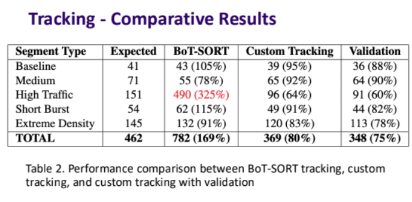
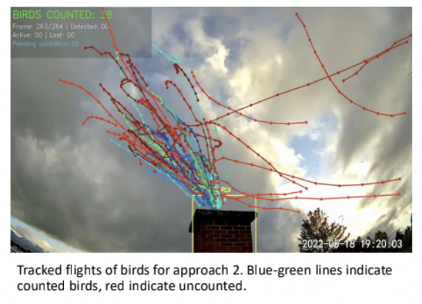

Work Experience
Analytics Engineer - Product Marketing (Co-op) at Lucid Motors
Jun 2025 - Present
- Identified and implemented a production process change that reduced installation cycle time by 70% and enabled over $1M in annual savings from productivity gains, winning the company Shark Tank (organizational and executive vote).
- Built reusable analytics workflows and self-serve tools (including a text-to-SQL AI agent) that enabled non-technical stakeholders to access market and performance insights faster.
- Automated Consumer New Vehicle Survey visualization with a Polars-based data pipeline and Excel model, replacing manual workflows and accelerating product pricing decisions.
- Prepared and presented competitive analysis reports to senior leadership and executives for IAA Mobility 2025 and LA Auto Show, informing data-driven marketing plans and vehicle design decisions.
 Energy Engineer at University of Washington
Energy Engineer at University of Washington
Jan 2025 - Jun 2025
- Created reports on utility spending and quantified savings from energy efficiency measures.
- Designed a database schema for building, meter, energy-use, and financial data to support a virtual campus energy model.
Data Analyst 1 at McKinsey & Company
Aug 2022 - Jul 2024
- Led product ownership of a tech talent survey analytics pipeline, defined requirements, designed ETL workflows and Tableau dashboards, and tracked outcomes across 20+ client projects.
- Cut report delivery time by over 90% by building a custom Python application to automate recurring analytics report generation.
- Deployed a Mixed Integer Programming optimization tool that informed initiative prioritization decisions across 5 McKinsey RTS studies.
Junior Data Analyst at McKinsey & Company
Dec 2020 - Jul 2022
- Overhauled database setup and ETL pipelines for ITSM datasets across 10+ client transformations, adding KPIs and statistical analysis that supported client productivity improvements.
- Delivered IT cost optimization recommendations on the "Ignite" diagnostic product, including talent hiring strategy and the case for helpdesk automation through RPA.
- Reduced data preparation costs by 65% by automating ITSM data cleaning with Alteryx workflows, cutting turnaround time by 80%.
Solution Delivery Intern at McKinsey & Company
Jan 2020 - Nov 2020
- Automated ITSM analysis with Alteryx workflows, reducing turnaround time by 80% and lowering data preparation cost versus manual Excel workflows.
- Worked as a business analyst for an internal web application by gathering requirements with stakeholders and helping run UAT sessions.
Featured Projects
Highlighting selected projects. View all projects & achievements →
Sequel2SQL
Capstone project to improve SQL error correction with an LLM-based workflow for PostgreSQL.
- Defined the architecture and built an LLM scaffolding that improves SQL error correction through a custom database toolkit, improving baseline performance by 6% on the BIRD-CRITIC benchmark.
E-Commerce Analytics Pipeline
Serverless analytics pipeline for e-commerce events using AWS and Spark.
- Built a serverless medallion pipeline processing 500K+ e-commerce events on hourly and daily cadences, with pre-aggregated tables for faster downstream analysis.
Automated Vaux's Swift Counter
Computer vision pipeline for counting birds in a conservation use case.
- Built a multi-stage pipeline using YOLOv11, SAM2, and custom trajectory tracking.
- Developed for the Courtenay Museum's Vaux's Swift conservation project.
- Reached over 90% accuracy in low and medium traffic scenarios.


Online Engagement & Review Behavior Study
Statistical study on how business responses are associated with review activity.
- Analyzed 760K+ Google reviews using matched treatment/control groups and paired t-tests; businesses that responded to reviews were associated with 9 additional reviews on average versus non-responders.
Quizzatron
Web app that generates quizzes from prompts and documents using LLMs.
- Built a quiz generation app in Streamlit with Google Gemini models.
- Converted prompts and PDFs into interactive quizzes.
- Used by classmates for faster practice-question creation.